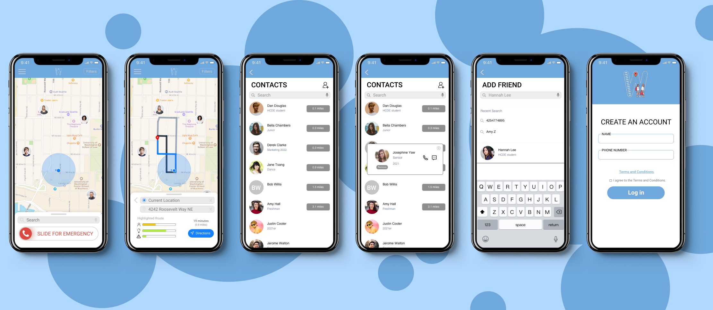
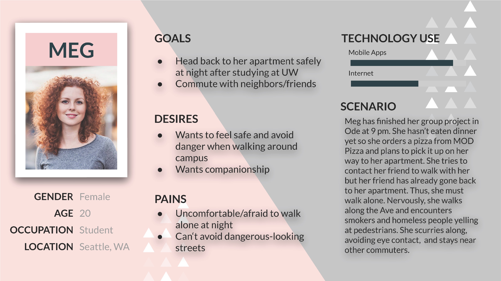
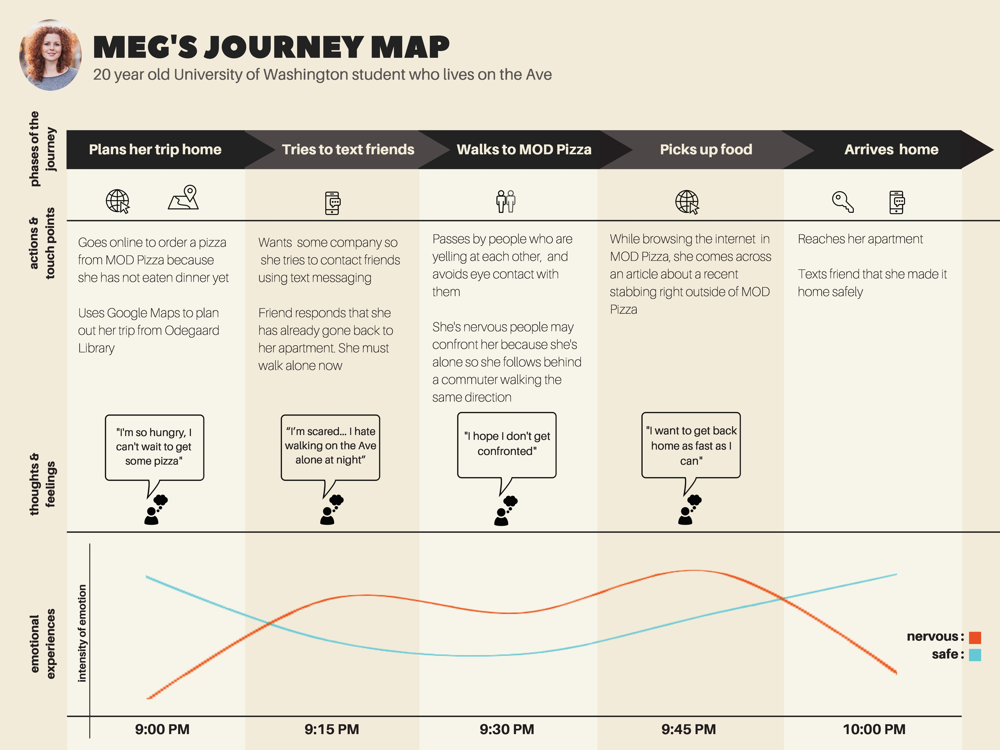
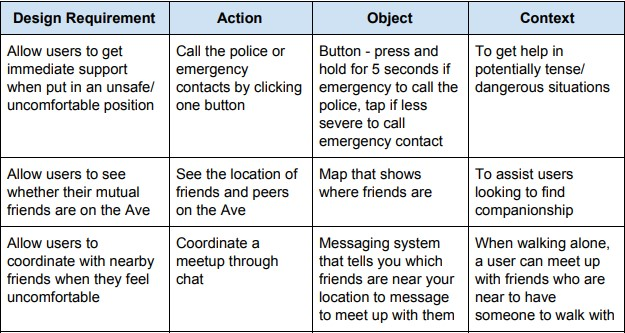
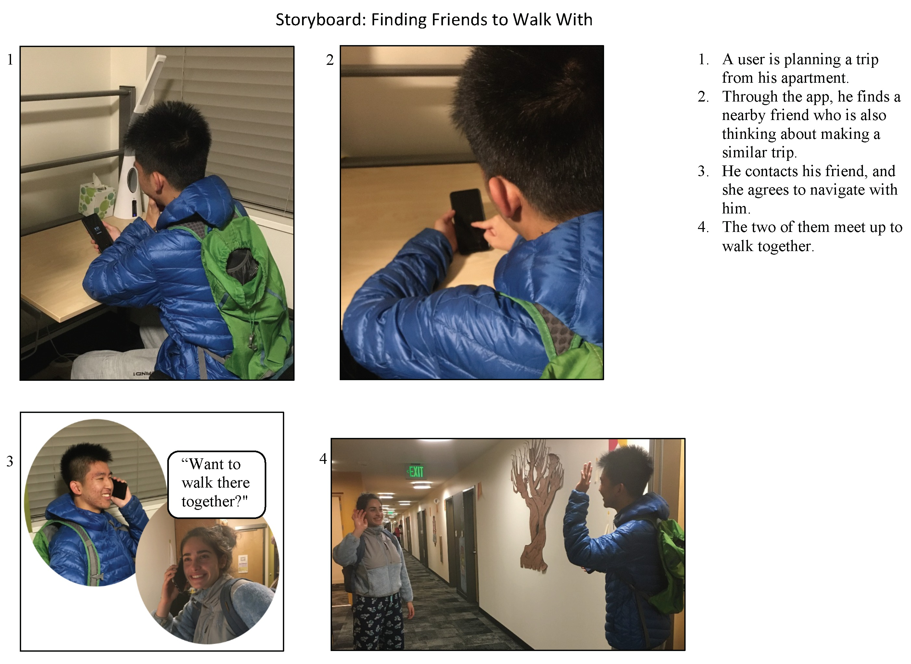
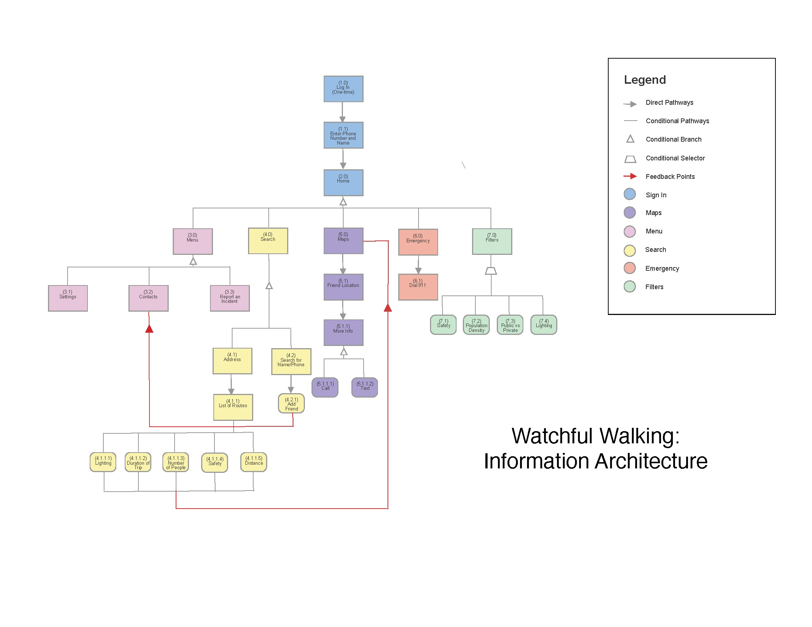
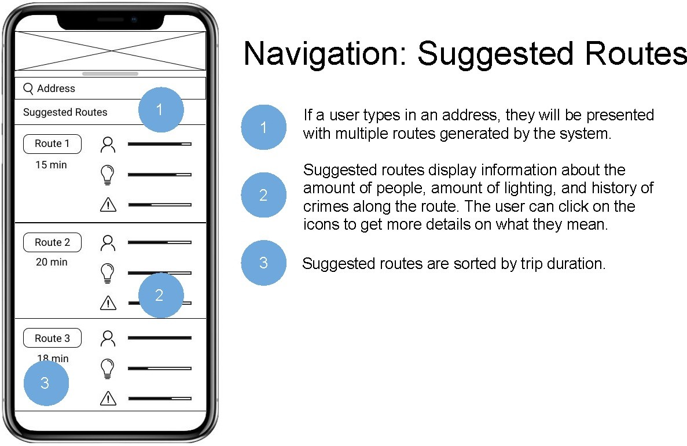
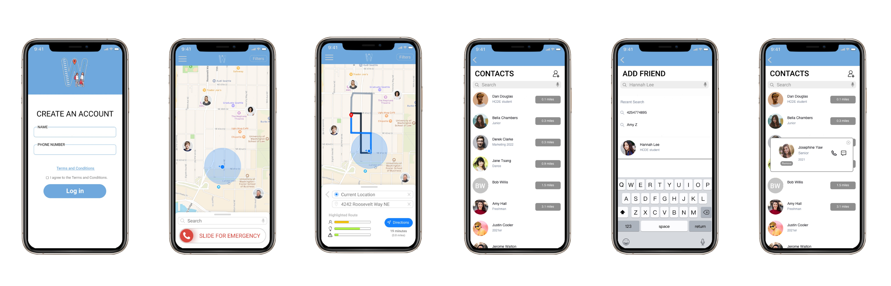

Watchful Walking
DURATION
Sep 25th, 2019 - Dec 6th, 2019
ORGANIZATION
University of Washington
FIELD(S)
UX Research, UX Design
ROLES/RESPONSIBILITIES
Individual: Semi-structured interview, storyboards
Collaborative: User modeling, design requirements, information architecture, prototyping, evaluative tests
Method
In collaboration with Hannah Mei, Varun Chawla, and Audrey Sun, I researched the college student experience of spending time in near-college streets and prototyped Watchful Walking, which aims to help students feel safer when on streets near campus.
How can we increase college students' feeling of safety when navigating the Ave?
Context
University Way Northeast, or, more commonly, "the Ave" is a long stretch of restaurants and shops that many University of Washington students who live in apartments commute through to attend classes. Unfortunately, the area also has a high crime rate and many students feel unsafe when walking alone. In this project, we followed the full user-centered design process to research how we could design something that helps people feel safer when commuting the Ave.
User Research
We first conducted four semi-structured interviews with University of Washington students who live in apartments and commute the Ave to research the emotional and physical experience of commuting the Ave. *Names are in pseudonyms
Brian
Brian is a 20-year old male undergraduate student who typically walks through the Ave twice a day. He typically walks in the daytime alone and finds the commute to be fairly peaceful.
"[Walking] feels pretty peaceful, I enjoy it [because] it's quiet and relaxing."
"If I were to encounter [a dangerous situation] I would avoid it... [or] confront it."
Danny
Danny is a 19-year old male sophomore who commutes every morning and evening and likes to hang out with his friends on the Ave. When out on the Ave until late, he feels safer if he is with his friends.
"I don't go to the Ave in super late hours, but if I do I'll feel safer in a group."
"[Commuting] is not bad if it's in the daytime and I keep to myself."
Stephen
Stephen is a 21-year old male undergraduate student who commutes daily to campus. He feels unsafe when walking the Ave because of the large number of homeless people on the streets.
"There are lots of homeless people hanging out there. I try to walk with my friends if I can, it makes me feel much better."
Anna
Anna is a 19-year old female undergraduate student who commutes the Ave almost every day. She either walks alone or with one other person and feels nervous walking past people who are yelling and intoxicated.
"Nervous. Always people yelling and seemingly intoxicated in some form. Never know when someone's going to pull out a knife."
User Modeling
We analyzed the interviews and developed two personas that represent the two prominent user groups - Max, who is concerned about saving time commuting, and Meg, who is concerned about safety. We decided to focus on designing for Meg because concern over safety was shared across most of the participants.

The journey map below details a typical scenario where Meg walks home from campus. The map details interactions with technology to depict design contexts and situations.

Design Requirements
We then developed a list of design requirements that need be met by our design in order to empower Meg and help her feel safer walking back to her apartment alone at night. For each requirement, we considered the action, object, and context to ensure that our design features are relevant to users.

Storyboards
For our next step, we brainstormed use cases and depicted them through storyboards. My storyboard depicts a student contacting a friend to walk from his apartment to campus with. Through storyboarding, we were able to better visualize the use contexts and helped us prioritize the features that are most important.

Information Architecture
We then translated design requirements into necessary features of the app and placed them as branches of the information architecture tree. Organizing the necessary features in this way facilitated the making of our paper prototype by listing features necessary for each screen.

Paper Prototype
Consulting the information architecture diagram, we created a paper prototype of our app to use for evaluative tests. We simulated interactions by using sticky notes for button presses and new sheets of paper for page transitions.
Evaluative Tests
We asked usability test participants to interact with the paper prototype to complete three tasks:
- Find and contact a friend using the map
- Plan a trip from the home screen
- Contact emergency services (911)
We found that participants were confused about the meaning of icons and suggested adding profile pictures to indicate friends. Participants also had mixed opinions about whether the emergency contact feature was necessary because such a situation is extremely rare. *view PDF for full list of findings
Wireframes
We then considered the feedback from paper prototype evaluative tests to design wireframes for the final prototype.

High Fidelity Prototype
Finally, we created a high-fidelity prototype of "Watchful Walking," an app that helps users feel safer when navigating the Ave, highlighting the capabilities below:
- Ability to quickly call for emergency with a swipe feature on the home screen
- Plan trips by considering light levels, number of people in proximity, and past crime records
- Friend list of people in proximity to reach out to for companionship

Reflection
What I learned:
- Data backs the unsafe experience that students feel on the Ave
- Feelings of safety are heightened by being with someone
- Light levels and population density are the biggest things people consider when choosing a route
If I did this again, I would...
- Dive deeper into rationale behind design decisions - specifically whether the emergency call feature is necessary
- What can this app provide that can't be met with other apps?
- Consider the feasibility of the solution harder since it is a pressing issue.